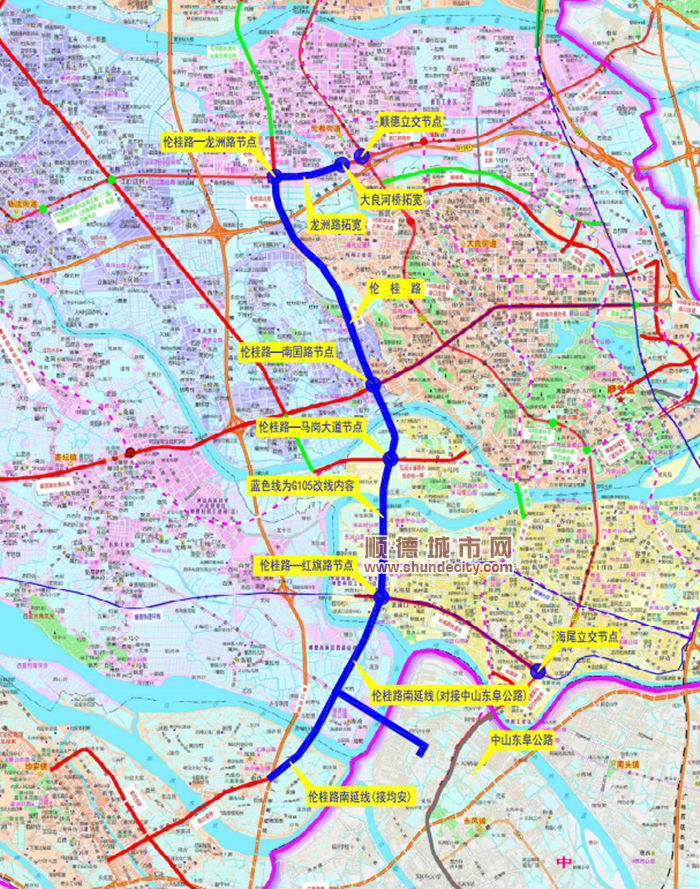

官宣！G105国道顺德段是这样改线，涉及四街道
|
|

G105国道顺德段改线：105国道由北往南行至顺德立交处转向西行，与龙洲路共线，直至龙洲路一伦桂路立交接入伦桂路转向南行，往南经勒流、大良、容桂，在伦桂路一红旗路立交接入红旗路转向东行，在海尾立交处接回现状105国道线位。
胡志力介绍，目前G105国道在顺德境内共有33.8公里，日交通量达到15万次辆，货车运量达30%。改线后的G105国道将不再经过车流、人流密集的顺德中心城区（大良、容桂），而是向西偏离了一段距离，经过勒流、大良、容桂部分村居，有利于改善当前顺德中心城区（大良、容桂）割裂的现状。同时，改线有利于缓解中心城区交通拥堵，降低沿线居民受到的噪声污染，对城市品质提升具有重要意义。下一步，顺德区交通运输局将广开言路听民意，科学规划便民行。